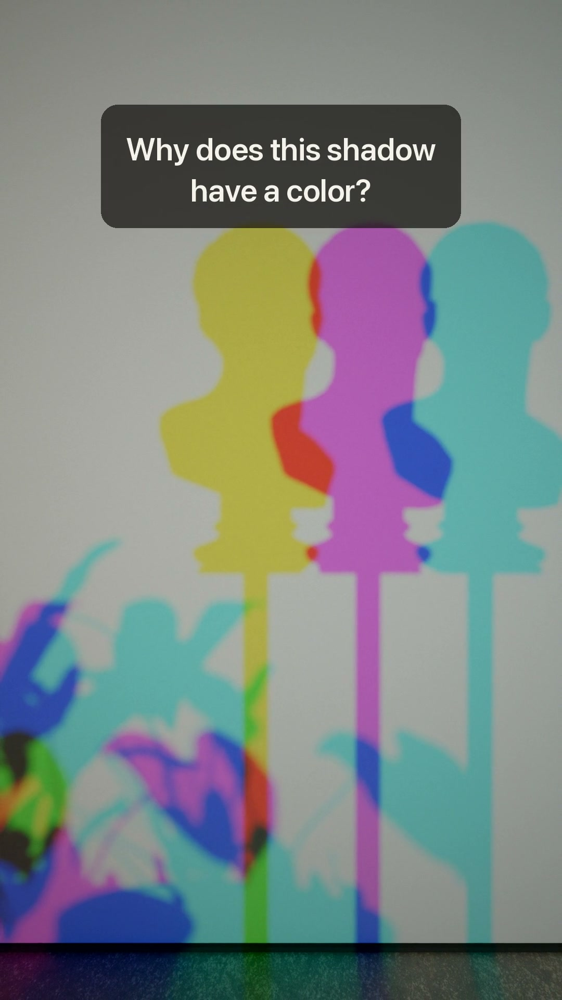

投稿パック: Wonder Zukan ep01 (版 A)
予約時刻: 2026-10-06 19:00 (America/New_York) = 日本時間 2026-10-07 08:00


YouTube Shorts: タイトル
YouTube Studio → 作成 → 動画をアップロード → タイトルに貼る → 公開設定で「スケジュール」を上の時刻に
Why does this shadow have a color? #shorts #physics51/100字
YouTube: 説明
説明欄に貼る
Three lights — red, green and blue — and a shadow that isn't black. Each shadow is simply where one light can't reach; the other two mix. A shadow isn't black. It's the light that's left. Part 2: why red + green looks yellow to your eyes. Physics of colored shadows: see the Exploratorium's "Colored Shadows" exhibit. 3D assets: Poly Haven (CC0)347/5000字
TikTok: キャプション
TikTok Studio (Web) → アップロード → キャプションに貼る → 「予約投稿」を上の時刻に
Why does this shadow have a color? Each shadow is where ONE light can't reach; the other two mix. Part 2: why red + green looks yellow to your eyes. #physics #science #sciencetok #museum #light #colortheory206/2200字
Instagram: キャプション
API の配線ができるまでは Instagram アプリか Meta Business Suite で予約
Why does this shadow have a color? Three lights — red, green and blue — and a shadow that isn't black. Each shadow is simply where one light can't reach; the other two mix. A shadow isn't black. It's the light that's left. Part 2: why red + green looks yellow to your eyes. Physics of colored shadows: see the Exploratorium's "Colored Shadows" exhibit. 3D assets: Poly Haven (CC0) #physics #science #art #museum #light #colortheory435/2200字
X: 本文
API の配線ができるまでは X で予約投稿
Why does this shadow have a color? Three lights — red, green and blue — and a shadow that isn't black. Each shadow is simply where one light can't reach; the other two mix. A shadow isn't black. It's the light that's left.222/280字
投稿は1本ずつジョニーの承認のあと。試験 (文字版 A / ナレーション版 B) は別の週の同じ曜日・時刻に出す。
このページは 2026-10-04 05:12 JST に自動削除されます (動画・画像は残る)